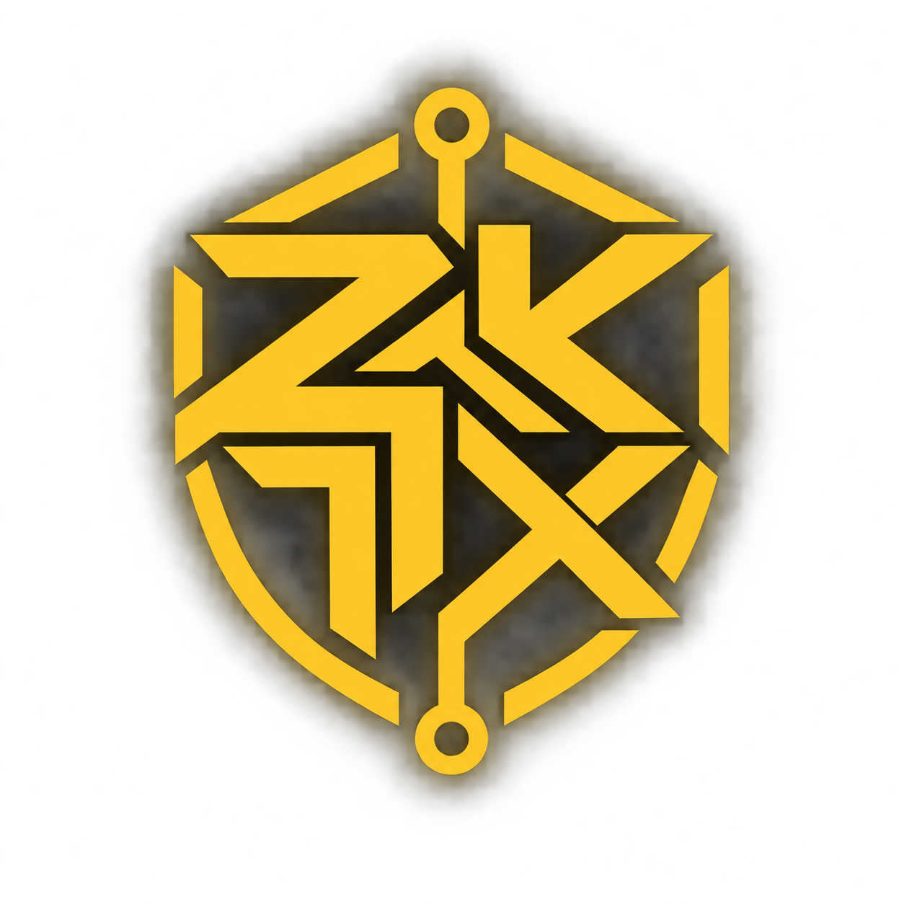

Keep your tokens. Skip the bridge.
Shield standard Robinhood Chain tokens and trade directly—no ZEC, wrapped privacy asset, or new wallet required.

ZKTXshielded transactionsZCASH-STYLE PRIVACY · NATIVE RH TOKENS
Shield a Robinhood Chain token, then route a buy or sell through compatible RH liquidity without exposing your wallet as the trader. The public pool still shows ZKTX vault slices—not an invisible AMM trade.
Shield standard Robinhood Chain tokens and trade directly—no ZEC, wrapped privacy asset, or new wallet required.
Tap the token's existing Robinhood Chain liquidity instead of waiting for an OTC match or entering a thin secondary pool.
The public pool sees the ZKTX vault executing—not the wallet that created the shielded intent.
Actual execution proceeds return as private notes, ready to send privately or withdraw when you choose.
Your order executes across 3–7 variable blocks, making simple wallet-to-trade and single-candle matching harder.
One percent of every market execution automatically buys ZKTX and permanently removes it from supply.
SHIELDED VAULT
ZK token execution on Robinhood Chain, combining Zcash-style shielded ownership with compatible existing liquidity. The swap remains public; the originating wallet and resulting ownership remain behind the vault's private-note layer.
Deposits, withdrawals, asset contracts, boundary amounts, and their timestamps remain onchain.
Commitments hide note contents, nullifiers prevent double-spending, and zero-knowledge proofs enforce balance conservation.
The selected venue still exposes each pool swap. It identifies the ZKTX adapter, while randomized slices and overlapping orders reduce direct wallet and order correlation.
ZCASH CONCEPTS · RH EXECUTION